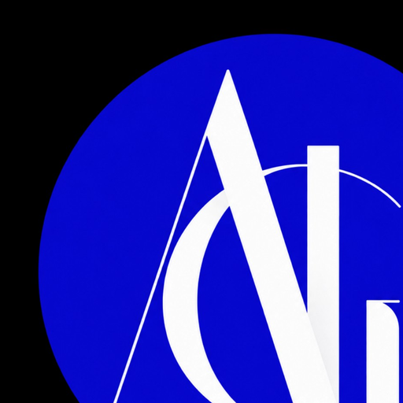

01GABON
MF
CONSTRUCTION • IMMOBILIER
Maisons Fritz
Constructeur de maisons individuelles au Gabon et activité d'agence immobilière, avec une approche centrée sur l'accompagnement, la qualité et la valorisation du patrimoine.

ATS International GroupGROUPE ENTREPRENEURIAL • AFRIQUE & EUROPE
ATS International Group réunit des activités complémentaires dans l'habitat, l'immobilier, les plateformes numériques, les partenariats d'affaires et la production audiovisuelle.
ATS International Group développe un écosystème de marques pensé pour répondre à des besoins concrets : bâtir des maisons, faciliter l'accès à l'immobilier, accélérer les mises en relation, structurer des partenariats et créer des contenus qui donnent de la visibilité aux projets.
Le groupe s'appuie sur une culture franco-gabonaise et une ouverture européenne, avec une direction portée depuis le Luxembourg et des activités tournées vers l'Afrique centrale et l'international.
Des expertises distinctes, réunies autour d'une même ambition de développement.
CONSTRUCTION • IMMOBILIER
Constructeur de maisons individuelles au Gabon et activité d'agence immobilière, avec une approche centrée sur l'accompagnement, la qualité et la valorisation du patrimoine.
PROPTECH • IMMOBILIER
Plateforme immobilière dédiée au marché congolais, conçue pour rapprocher propriétaires, particuliers et professionnels autour d'annonces et de services numériques.
PARTENARIATS • DÉVELOPPEMENT
Plateforme de partenariats et de développement d'affaires destinée à connecter projets, expertises, investisseurs et opportunités entre l'Afrique et les marchés internationaux.
FILM • TV • ADVERTISING • DIGITAL
Maison de production créative qui imagine, développe et produit des concepts audiovisuels pour les marques, les institutions, la télévision et les environnements digitaux.
PRÉSIDENCE DU GROUPE
Entrepreneur franco-gabonais domicilié au Luxembourg, Fritz Mambouka préside ATS International Group et porte une vision entrepreneuriale qui relie l'Afrique centrale à l'Europe.
Fils d'un ancien ambassadeur du Gabon, il inscrit son parcours dans une culture de l'international, du réseau et du service. Sa feuille de route pour ATS : créer des entreprises utiles, développer des passerelles entre secteurs et bâtir un groupe capable de faire grandir ses marques dans la durée.
« Construire des entreprises qui créent de la valeur ici, tout en pensant dès le départ à l'échelle internationale. »
Le groupe avance par métiers complémentaires, avec l'ambition de mutualiser les réseaux, les technologies, la création et les opportunités.
Développer des solutions d'habitat et de patrimoine adaptées aux marchés locaux.
Simplifier l'accès aux annonces, aux services et aux opportunités grâce au numérique.
Faire circuler projets, partenaires, expertises et capitaux entre l'Afrique et l'international.
Donner une forme, une image et une audience aux marques et aux histoires qui méritent d'être vues.
Pour une prise de contact corporate, un projet d'investissement, un partenariat ou une collaboration avec l'une des maisons du groupe.
Les coordonnées officielles du groupe sont à renseigner avant la mise en ligne.